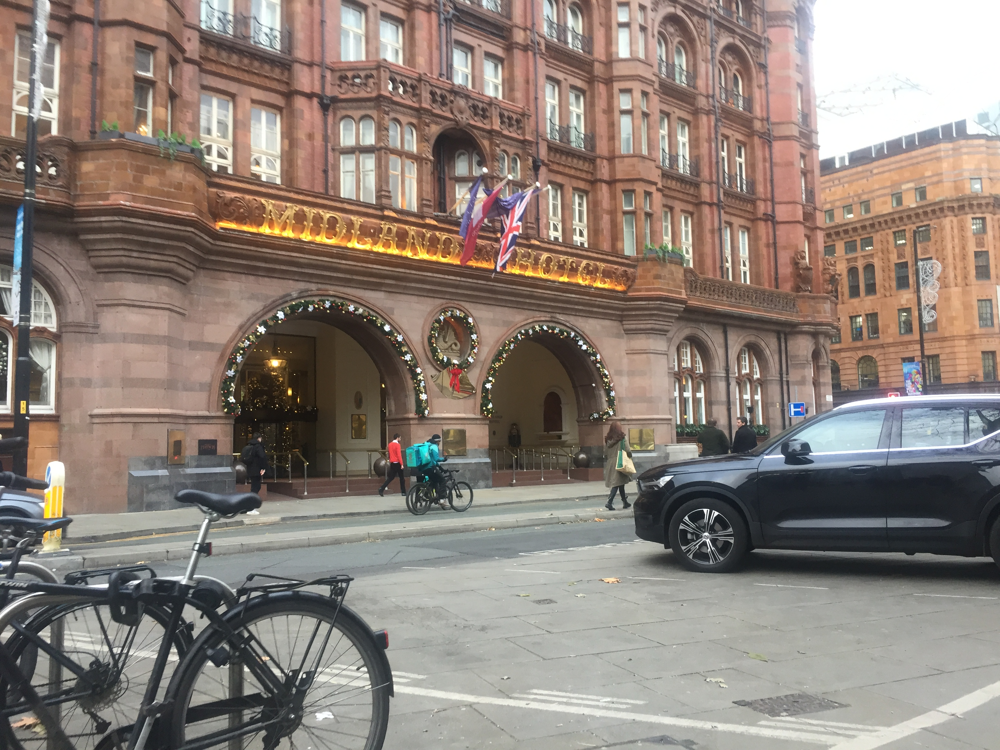
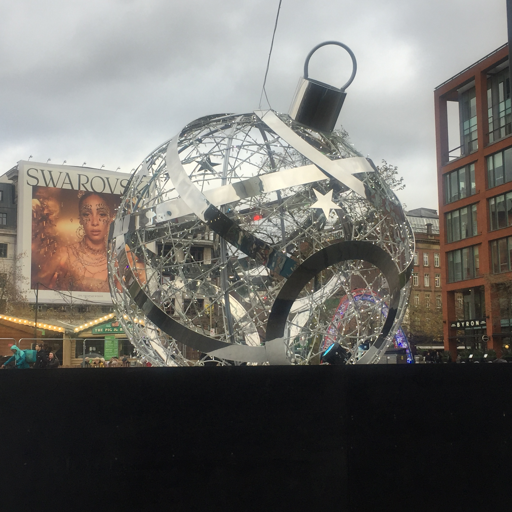
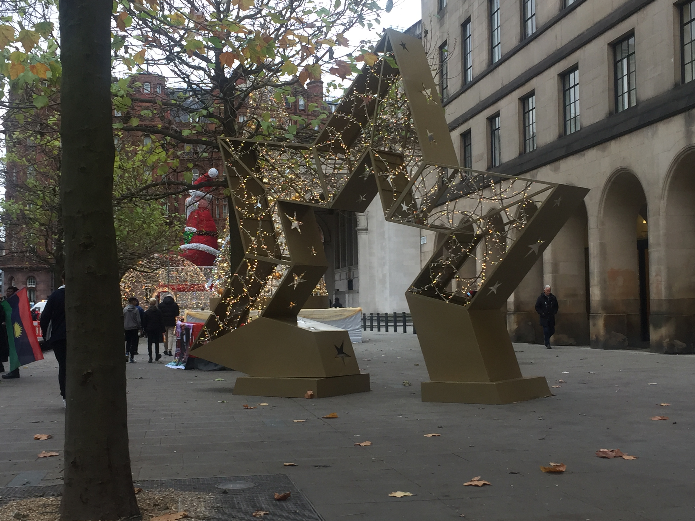
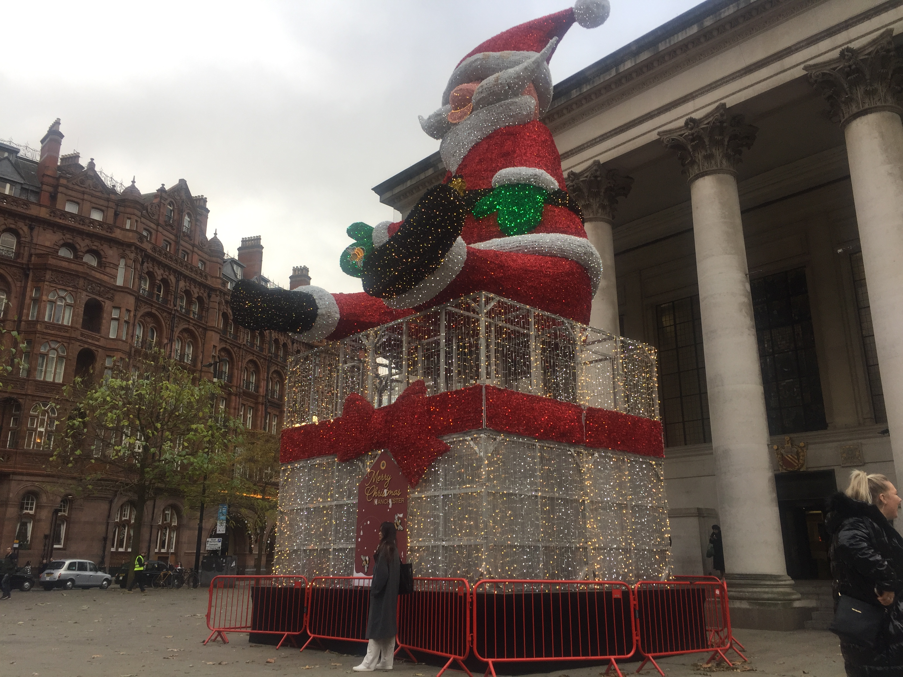

Home Food/drink Shopping Places to stay landmarks+
Landmarks
There are a functions of landmarks that you can choose to visit such as
Midlands hotel
Midland hotel is a popular landmark due to the fact that its got some intresting history for example rolls and royce made there first deal to work togther and it would be know today as rolls royce.
David beckham and victoria beckham had there first date at the hotel and splash there money on expensive wine
The manchester library
The manchester library is very popular due charles dickens visting the place in 1852 and from then there had been alot of story writers and authors who visited the place.
Piccadlly garden
picadilly garden are famouse because of there events for each time of the year such as halloween, chrismas and easter. its also famouse for alot of people who love drama i mean if you wanna see someone fight in public then picadlly garden is the one to go to, who needs boxing fights when you have picadilly garden.
  